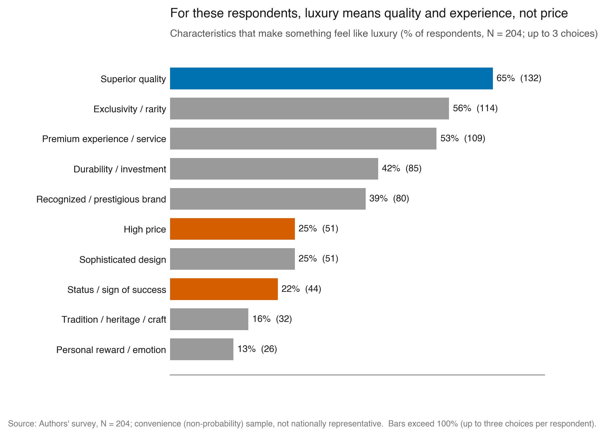
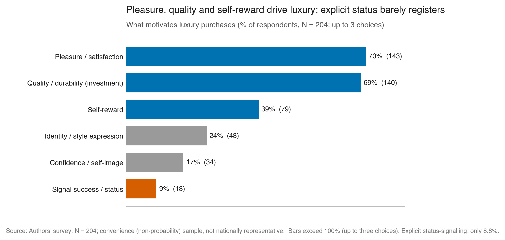
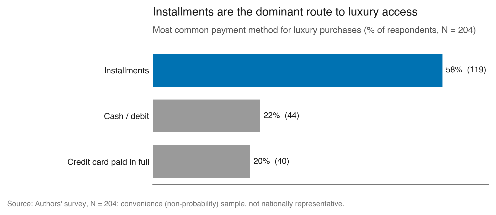
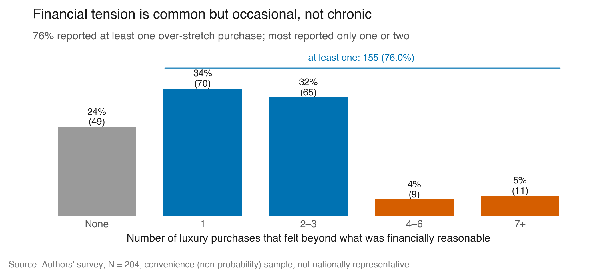
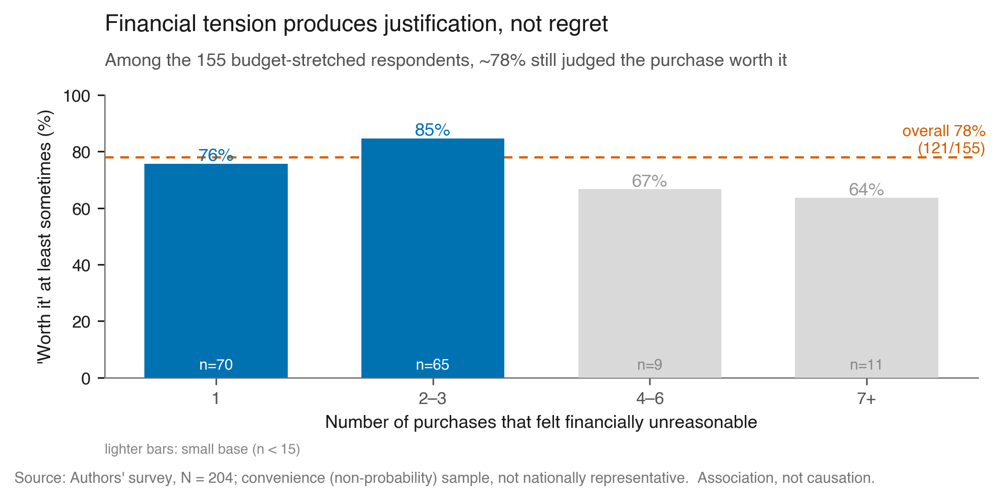
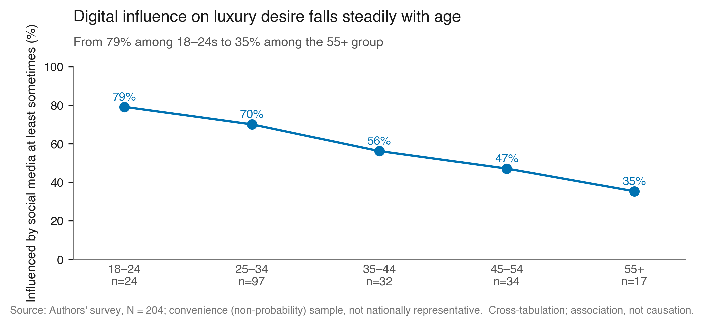
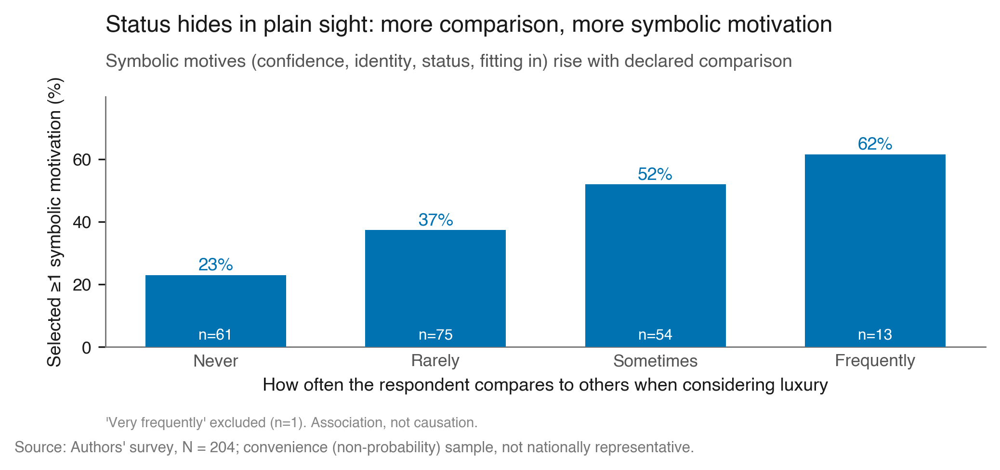
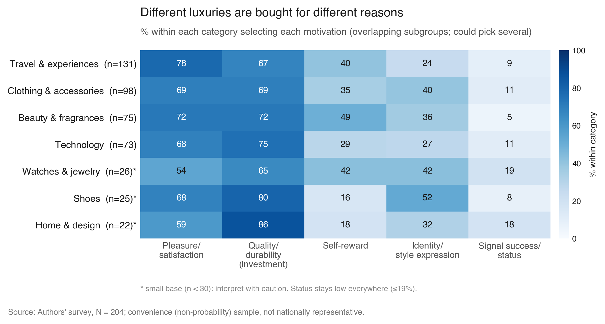
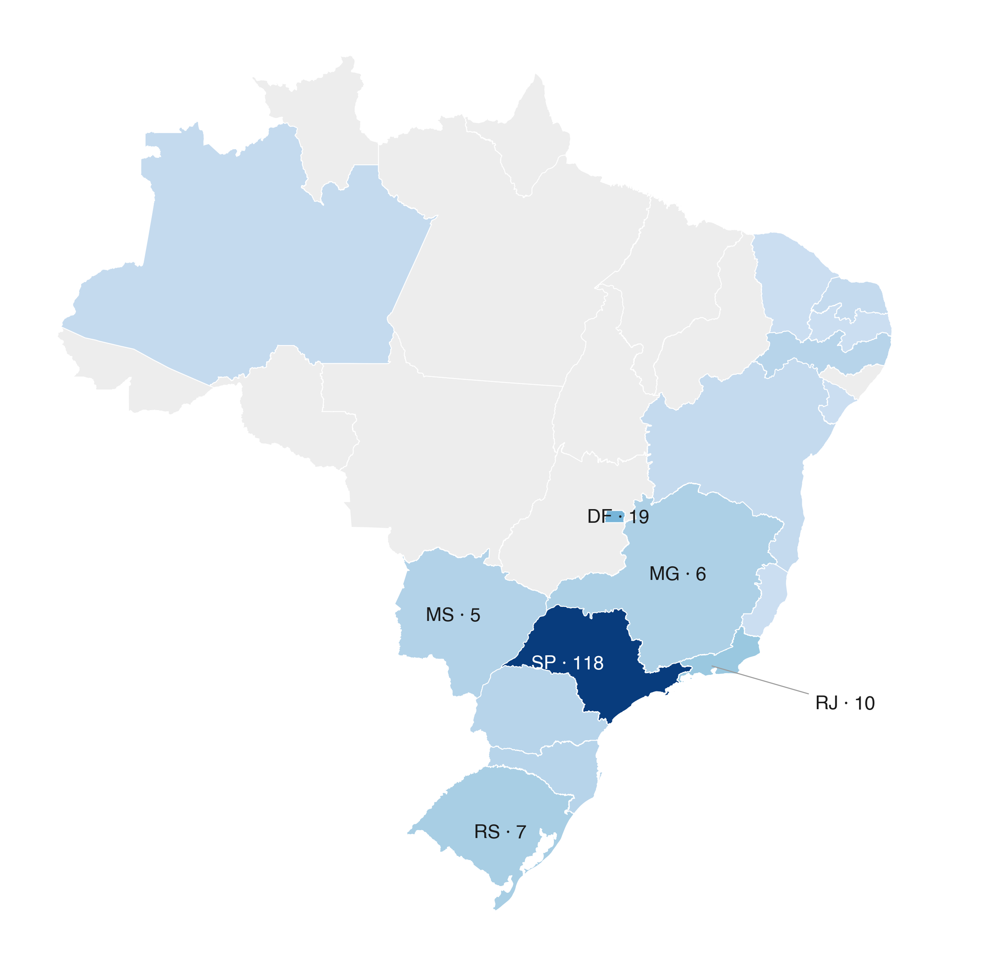

How urban middle-class Brazilians desire, access, justify and pay for luxury. A survey of 204 consumers.
The thread running through every finding: for these consumers luxury is a value judgment and an emotional one. It is desired, made accessible through payment, and reconciled after the fact, far more than it is a display of wealth.
Asked what makes something feel like luxury, respondents chose superior quality (64.7%), premium experience (53.4%) and exclusivity (55.9%) far ahead of high price (25.0%) and status (21.6%).
This reframes the whole dissertation: if luxury is defined by value rather than cost, it cannot be analysed through income alone, which is exactly the gap the study sets out to fill.

The most-consumed category is travel and experiences (64%), not classic hard-luxury goods. The strongest motives are pleasure (70%), quality as investment (69%) and self-reward (39%); explicit status-signalling barely registers at 8.8%.
Emotional and rational justifications travel together: people buy luxury because it feels good and because they can frame it as lasting, high-quality value.

Installment payment is the most common method (58.3%), ahead of cash/debit (21.6%) and credit paid in full (19.6%).
Access to luxury is shaped not only by income but by payment infrastructure: distributing cost over time makes a higher-value purchase feel manageable, Thaler’s mental accounting in everyday practice.

A majority (76%) report at least one purchase beyond what felt financially reasonable, but the typical experience is one or two such purchases, not chronic excess.
When luxury strains the budget, people cut leisure and going out (44%); only 10% cut food and 6% delay bills. Luxury is a managed, discretionary behaviour, not a driver of essential-spending sacrifice.

Among the 155 respondents who over-stretched, 78.1% still judged the purchase “worth it” at least sometimes.

62% say social media makes them want a specific luxury item at least sometimes, yet only 10% name it as a direct purchase trigger. It works cumulatively, shaping aspiration rather than prompting checkout.
Statistically significant
Only 8.8% admit buying luxury to signal status. Yet the more a respondent compares themselves to others, the more they select symbolic motives (confidence, identity, status, fitting in): from 23% (never) to 62% (frequently).
Statistically significant
Travel and beauty skew to pleasure and self-reward; technology and home skew to quality and durability; identity peaks for clothing. Across every category, explicit status stays at or below 19%.
Luxury is plural and context-dependent: a single behavioural model cannot capture it, which is why the thesis analyses motivation category by category.

The Results chapter reports the cross-tabulations descriptively. The tests below put numbers on whether each pattern is stronger than sampling noise within this sample, using chi-square and Cochran-Armitage trend tests, Cramér’s V, Spearman, and a Benjamini-Hochberg correction across the five confirmatory tests.
| Thesis argument | Test | Effect / trend | p (FDR) | Verdict |
|---|---|---|---|---|
| III.2.12 · comparison → symbolic motive | Cochran-Armitage trend | ρ=0.26 · V=0.26 | 0.014 | significant |
| III.2.11 · age → social-media influence | Cochran-Armitage trend | ρ=−0.26 · V=0.27 | 0.014 | significant |
| III.2.10 · justification declines with tension? | Cochran-Armitage trend | M²=0.34 | 0.36 | no decline (good) |
| III.2.8 · over-stretch × payment | χ² of independence | V=0.14 · power 0.34 | 0.36 | null, underpowered |
| III.2.7 · frequency × payment | χ² of independence | V=0.10 · power 0.11 | 0.93 | null, underpowered |
A multivariate logistic model of “worth it” (the 155 stretched respondents) finds no single dominant predictor (pseudo-R² = 0.04): justification is diffuse rather than driven by one factor. Both the headline proportion and the two gradients were independently reproduced from the raw Excel by an adversarial statistician review.
